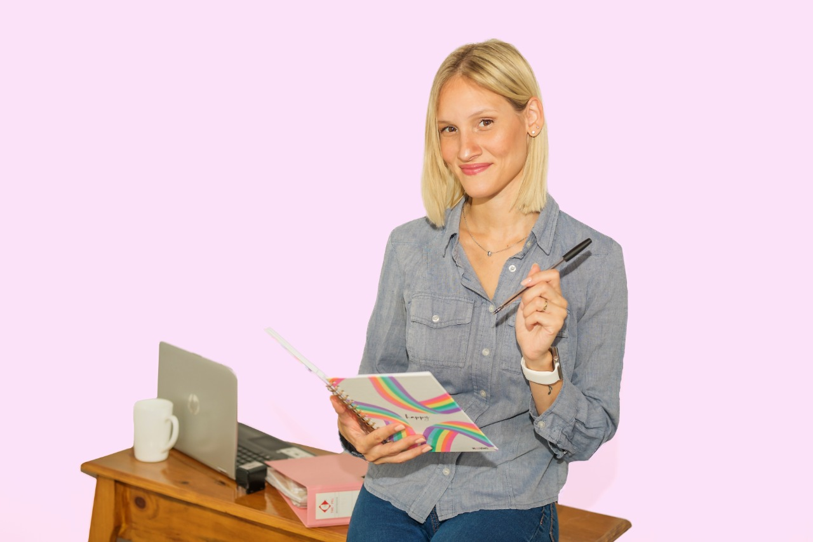
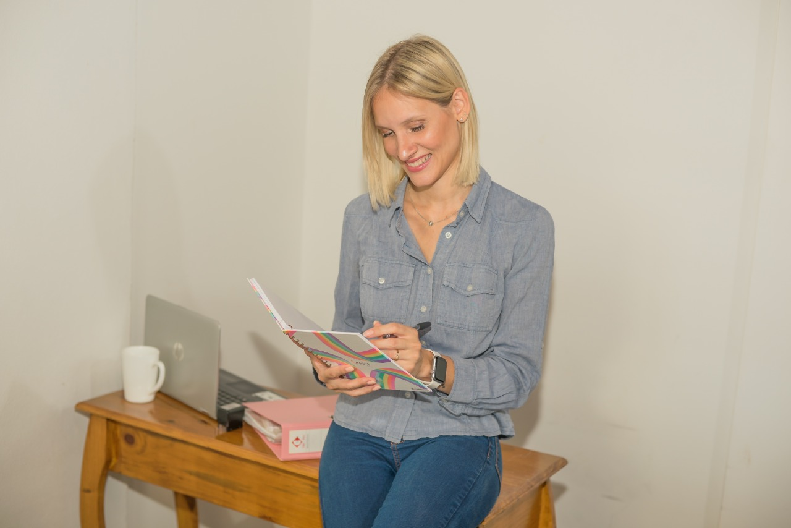
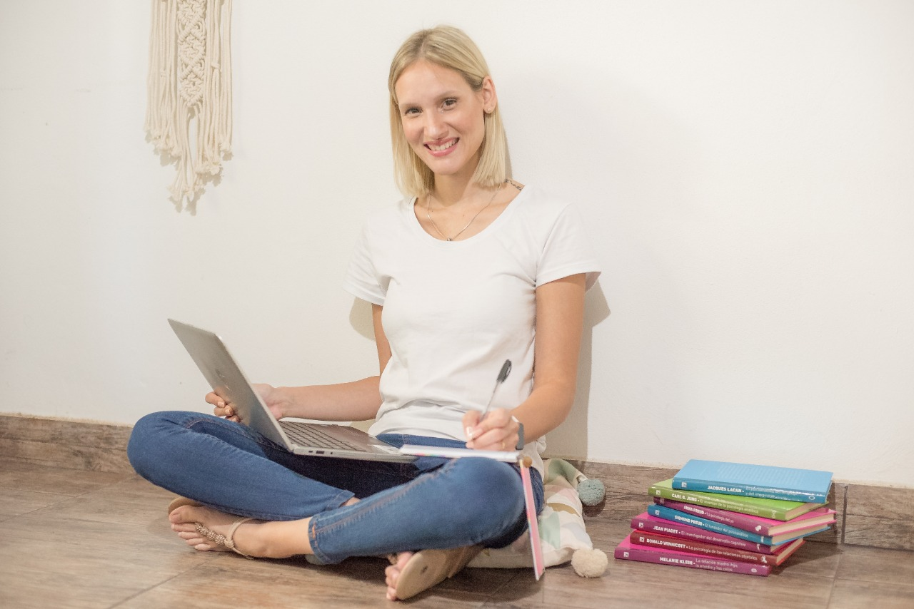

Nací en 1986 en Buenos Aires, Argentina. Tengo 34 años.
Soy la primera de tres hermanos.
Estudié en el Colegio Nacional de Buenos Aires de la UBA.



Estudios y experiencia
Estudié medicina en la Universidad de Buenos Aires. Hice la residencia de pediatría en el Hospital de Niños Ricardo Gutiérrez.
Cuando terminé trabajé en varios lugares. En demanda espontánea para una obra social, en la guardia de una clínica privada, en domicilio de una prepaga, siendo pediatra de consultorio de un centro de salud de Tigre.
Hice parte de la especialización en toxicología. Quería ser toxicóloga pero aún no terminé el posgrado.
En 2019 nació mi hija. Hoy tiene 2 años.
Desde que ella nació empecé a publicar en Instagram cosas que como pediatra veía que podían servirles a otras personas que acompañen infancias. Empecé a publicar cosas que me hacían ruido como madre y que pensaba que estaba bueno cambiar. Empezamos a hacer una tribu enorme que día a día sigue creciendo y empoderando familias.
Actualmente trabajo en consultorio privado en el barrio de Nuñez. Acompaño familias en el crecimiento de sus hijos e hijas.
Soy madre antes que pediatra. Cero fundamentalista de nada, porque sé que hacemos lo que podemos con la información que tenemos.
Amo empoderar mapaternidades con información actualizada y que cada uno elija su camino.